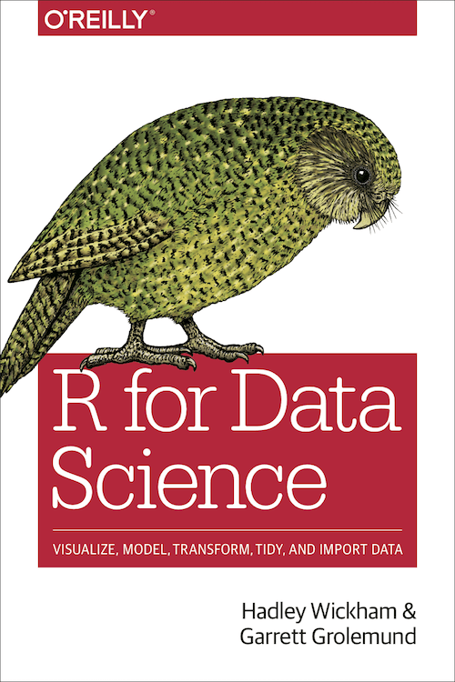
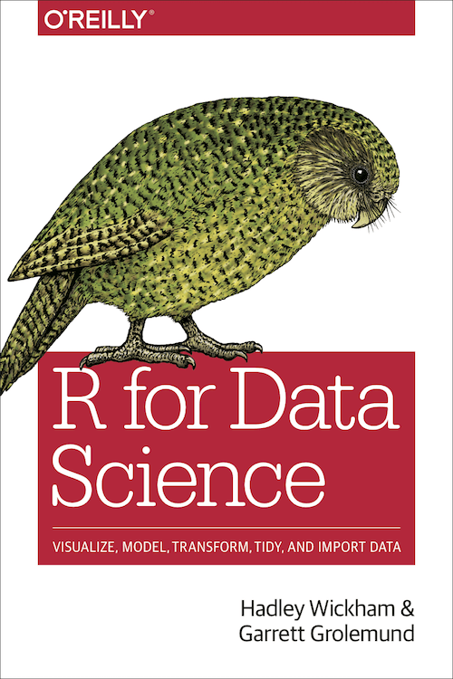

1 Getting Started with R
Before we can start exploring data in R, there are some key concepts to understand first:
- Why R?
- How to learn R?
- What are R and RStudio?
- How to use R and RStudio without installation
- How to install R and RStudio
- How to write and run code in R
- What are R packages?
1.1 Why R?
R is a free and open-source programming language that provides a wide range of advanced statistics capabilities, state-of-the-art graphics, and powerful data manipulation capabilities. It supports larger data sets, reads any type of data, and runs on multiple platforms. R makes it easier to automate tasks, organize projects, ensure reproducibility, and find and fix errors, and anyone can contribute packages to improve its functionality. Moreover, the following points are worth to emphasize:
- R is an artist! Check out:
- R is an employment insurance. If you are good in R programming or if you are good in writing programming code in general, you have plenty of opportunities to earn a decent salary.
- R uses the computer and computers are great! Doing statistics on a computer is faster, easier and more powerful than doing it by hand. Computers excel at mindless repetitive tasks. For most people, the only reason to ever do statistical calculations with pencil and paper is for learning purposes.
- Excel is bad! Doing statistics in a spreadsheet (e.g., Microsoft Excel) is often a bad idea. Although many people are likely feel more familiar with them, spreadsheets are very limited in terms of what analyses they allow you to do. You can easily lose the overview and it is hard to keep track of what you have done and in comparison with command line driven programs. In particular, the ability to make your analysis replicable is limited.
- R is good, proprietary software is bad! Avoiding proprietary software is a very good idea because it costly, support is exclusively provided by the owner of the software (if they stop supporting your version you are lost), security issues cannot be checked as the source code is not available, and possibilities for customization are limited.
- R is big! Something that you might not appreciate now, but will love later on if you do anything involving data analysis, is the fact that R is highly extensible. When you download and install R, you get all the basic packages, and those are very powerful on their own. However, because R is so open and so widely used, it’s become something of a standard tool in statistics, and so lots of people write their own packages that extend the system. And these are freely available too. One of the consequences of this, I’ve noticed, is that if you open up an advanced textbook (a recent one, that is) rather than introductory textbooks, is that a lot of them use R. In other words, if you learn how to do your basic statistics in R, then you’re a lot closer to being able to use the state of the art methods than you would be if you’d started out with a “simpler” system: so if you want to become a genuine expert in data analysis, learning R is a very good use of your time.
- R is the future! Programming is a core skill in research, economics, and business. R is one of the most widely used programming languages in the world today. It is used in almost every industry such as finance, banking, medicine or manufacturing. R is used for portfolio management, risk analytics in finance and banking industries.
1.2 How to learn R
There are many different approaches to learning R. It pretty much depends on your preferences, needs, goals, prerequisites and limitations. It is up to you to search and find a suitable way to achieve the learning goals. However, I offer these notes and if you are in one of my classes, you can ask at any time for help.
The notes should walk you through many of the things that are important when working in R, and it should help you dig deeper and learn more if you want to. For beginners, I recommend starting with my swirl courses, see section 2. However, there are thousands of other resources for learning R: textbooks, online courses, videos, guided tutorials, etc.. I give some recommendations about learning resources in section 1.3.
Below, I’ll give you a list of resources that are worth a look. You might find what you’re looking for there. If not, just keep reading this book. Above all, those who have personally taken one of my courses are welcome to contact me if they think I can help them.
Warning: R is not without its weaknesses: It’s not easy to learn, it has some very annoying quirks that we all have to deal with, it’s slower than other languages (Phyton, MATLAB), and R’s algorithms and sources are spread across many packages (since there’s no big company behind it that wants you to buy it). This sometimes makes it very difficult for beginners to find what they are looking for. In simple words: you can get lost!
Tips on learning to code: Learning to code/program is quite similar to learning a foreign language. It can be daunting and frustrating at first. Such frustrations are common and it is normal to feel discouraged as you learn. However, just as with learning a foreign language, if you put in the effort and are not afraid to make mistakes, anybody can learn and improve.
Here are a few useful tips to keep in mind as you learn to program:
- Remember that computers are not actually that smart: You may think your computer or smartphone is “smart,” but really people spent a lot of time and energy designing them to appear “smart.” In reality, you have to tell a computer everything it needs to do. Furthermore, the instructions you give your computer can’t have any mistakes in them, nor can they be ambiguous in any way.
- Take the “copy, paste, and tweak” approach: Especially when you learn your first programming language or you need to understand particularly complicated code, it is often much easier to take existing code that you know works and modify it to suit your ends. This is as opposed to trying to type out the code from scratch. We call this the “copy, paste, and tweak” approach. So early on, we suggest not trying to write code from memory, but rather take existing examples we have provided you, then copy, paste, and tweak them to suit your goals. After you start feeling more confident, you can slowly move away from this approach and write code from scratch. Think of the “copy, paste, and tweak” approach as training wheels for a child learning to ride a bike. After getting comfortable, they won’t need them anymore.
- The best way to learn to code is by doing: Rather than learning to code for its own sake, we find that learning to code goes much smoother when you have a goal in mind or when you are working on a particular project, like analyzing data that you are interested in and that is important to you.
- Practice is key: Just as the only method to improve your foreign language skills is through lots of practice and speaking, the only method to improving your coding skills is through lots of practice. Don’t worry, however, we’ll give you plenty of opportunities to do so!
1.3 Learning resources

Thousand of freely available books and resources exist. On (https://bookdown.org/) and in the Big Book of R is a big collection of links to R books that verifies my claim. Another nice collection of learning ressources can be found here: AWESOME R Learning-Resources
In Rstudio you find in the left panel at the bottom a panel that is called Help. There you find a lot of links, manuals, and references that offer you tons of resources to learn R for free including: (https://education.rstudio.com/) and (https://support.rstudio.com/hc/en-us/articles/200552336-Getting-Help-with-R)
Since you may feel overwhelmed by the number of resources, I would like to highlight four books:
 


- Timbers, Campbell, and Lee (2022): Data Science: A First Introduction is a free and up to date book that comes with exercises with worksheets that are available on UBC-DSCI GitHub repository
- Wickham and Grolemund (2023): R for Data Science: Import, Tidy, Transform, Visualize, and Model Data is the most popular source to learn R. It focuses on introducing the tidyverse package and is freely available online.
- Irizarry (2022): Introduction to Data Science: Data Analysis and Prediction Algorithms With R is a complete, up to date, and applied introduction.
- Venables, Smith, and R Core Team (2022) An Introduction to R: Notes on R: A Programming Environment for Data Analysis and Graphics is a manual from the R Core Development Team that shows how to use R without having to install and load additional packages.
Some other sources that are worth mentioning are these:
- The search engine www.rseek.org is R specific and often better than www.google.com as it only searches for content that has to do with the programming language R.
- On www.rdocumentation.org you can find the complete documentation of all R packages.
- Many find these cheatsheets helpful.
1.4 What are R and RStudio?
Throughout this book, we will assume that you are using R via RStudio. First time users often confuse the two. At its simplest, R is like a car’s engine while RStudio is like a car’s dashboard as illustrated in Figure 1.1.

Figure 1.1: Analogy of difference between R and RStudio.
More precisely, R is a programming language that runs computations, while RStudio is an integrated development environment (IDE) that provides an interface by adding many convenient features and tools. So just as the way of having access to a speedometer, rearview mirrors, and a navigation system makes driving much easier, using RStudio’s interface makes using R much easier as well.
Much as we don’t drive a car by interacting directly with the engine but rather by interacting with elements on the car’s dashboard, we won’t be using R directly but rather we will use RStudio’s interface. After you install R and RStudio on your computer, you’ll have two new programs (also called applications) you can open. We’ll always work in RStudio and not in the R application. Figure 1.2 shows what icon you should be clicking on your computer.

Figure 1.2: Icons of R versus RStudio on your computer.
After you open RStudio, you should see something similar to Figure 1.3 where three or four panels dividing the screen.

Figure 1.3: RStudio interface to R.
- The Environment panel, where a list of the data you have imported and created can be found.
- The Files, Plots and Help panel, where you can see a list of available files, will be able to view graphs that you produce, and can find help documents for different parts of R.
- The Console panel, used for running code. This is where we’ll start with the first few examples.
- The Script panel, used for writing code. This is where you’ll spend most of your time working.
The Console panel will contain R’s startup message, which shows information about which version of R you’re running. My startup message at the time of writing was as follows:
R version 4.1.2 (2021-11-01) – “Bird Hippie” Copyright (C) 2021 The R Foundation for Statistical Computing Platform: x86_64-pc-linux-gnu (64-bit)
R is free software and comes with ABSOLUTELY NO WARRANTY. You are welcome to redistribute it under certain conditions. Type ‘license()’ or ‘licence()’ for distribution details.
Natural language support but running in an English locale
R is a collaborative project with many contributors. Type ‘contributors()’ for more information and ‘citation()’ on how to cite R or R packages in publications.
Type ‘demo()’ for some demos, ‘help()’ for on-line help, or ‘help.start()’ for an HTML browser interface to help. Type ‘q()’ to quit R.
If you don’t have panel number 4, open it by opening an existing R-script or creating a new one. You can create a new on by clicking Ctrl+Shift+N (alternatively, you can use the menu: File\(\rightarrow\)New File\(\rightarrow\)R Script).
You can resize the panels as you like, either by clicking and dragging their borders or using the minimise/maximise buttons in the upper right corner of each panel. Clicking Ctrl++ and Ctrl+- allows to make the fonts larger or smaller.
When you exit RStudio, you will be asked if you wish to save your workspace, meaning that the data that you’ve worked with will be stored so that it is available the next time you run R. That might sound like a good idea, but in general, I recommend that you don’t save your workspace, as that often turns out to cause problems down the line. It is almost invariably a much better idea to simply rerun the code you worked with in your next R session.
1.5 How to use R and RStudio without installation
If you don’t want to install R on your PC or you don’t have admin rights to do so, you can use RStudio online doing cloud computing on https://posit.cloud/. Posit Cloud (formerly RStudio Cloud) is a cloud-based solution that allows anyone to do, share, teach and learn data science online. It is free for individuals with some restrictions and limited capacities.
1.6 Installing R and RStudio
You will first need to download and install both R and RStudio (Desktop version) on your computer. It is important that you install R first and then install RStudio.
- You must do this first: Download and install R by going to https://cloud.r-project.org/.
- If you are a Windows user: Click on “Download R for Windows”, then click on “base”, then click on the Download link.
- If you are macOS user: Click on “Download R for (Mac) OS X”, then under “Latest release:” click on R-X.X.X.pkg, where R-X.X.X is the version number. For example, the latest version of R as of November 25, 2019 was R-3.6.1.
- If you are a Linux user: Click on “Download R for Linux” and choose your distribution for more information on installing R for your setup.
- You must do this second: Download and install RStudio at https://www.rstudio.com/products/rstudio/download/.
- Scroll down to “Installers for Supported Platforms” near the bottom of the page.
- Click on the download link corresponding to your computer’s operating system.
1.7 What are R packages?
A package is basically just a big collection of functions, data sets and other R objects that are all grouped together under a common name. Some packages are already installed when you put R on your computer, but the vast majority of them of R packages are out there on the internet, waiting for you to download, install and use them. R packages are collections of functions and data sets developed by the community. They increase the power of R by improving existing base R functionalities, or by adding new ones. For example, if you are usually working with data frames, probably you will have heard about dplyr or data.table, two of the most popular R packages. More than 10,000 packages are available at the official repository (CRAN) and many more are publicly available through the internet.
In this section, I’ll describe how to work with packages using the Rstudio tools. Along the way, you’ll see that whenever you get Rstudio to do something (e.g., install a package), you’ll actually see the R commands that get created.
However, before we get started, there’s a critical distinction that you need to understand, which is the difference between having a package installed on your computer, and having a package loaded in R. When you install R on your computer only a small number of packages come bundled with the basic R installation. The installed packages are on your computer. The critical thing to remember is that just because something is on your computer doesn’t mean R can use it. In order for R to be able to use one of your installed packages, that package must also be loaded. Generally, when you open up R, only a few of these packages (about 7 or 8) are actually loaded. Basically what it boils down to is this:
- A package must be installed before it can be loaded.
- A package must be loaded before it can be used.
We only need to install a package once on our computer. However, to use the package, we need to load the library every time we start a new R environment. You can think of this as installing a bulb versus turning on the light.
Figure 1.4: Installing packages
The two step process might seem a little odd at first, but the designers of R had very good reasons to do it this way. That is, there are more than 10.000 packages, and probably about 8000 authors of packages, and no-one really knows what all of them do. Keeping the installation separate from the loading minimizes the chances that two packages will interact with each other in a nasty way. Moreover having installed all available packages would probably blow your hard disk.
Another good analogy for R packages is they are like apps you can download onto a mobile phone:

Figure 1.5: Analogy of R versus R packages.
So R is like a new mobile phone: while it has a certain amount of features when you use it for the first time, it doesn’t have everything. R packages are like the apps you can download onto your phone from Apple’s App Store or Android’s Google Play.
1.7.1 Package installation
There are two ways to install an R package: an easy way and a very easy way. Let’s install the ggplot2 package the easy way first as shown in Figure 1.6. In the Files pane of RStudio:
- Click on the “Packages” tab.
- Click on “Install” next to Update.
- Type the name of the package under “Packages (separate multiple with space or comma):” In this case, type
ggplot2. - Click “Install.”
Figure 1.6: Installing packages in R the easy way.
An alternative way to install a package is by typing
install.packages("ggplot2")in the console pane of RStudio and pressing Return/Enter on your keyboard. Note you must include the quotation marks around the name of the package.
Much like an app on your phone, you only have to install a package once. However, if you want to update a previously installed package to a newer version, you need to reinstall it by repeating the earlier steps.
1.7.2 Package loading
Recall that after you’ve installed a package, you need to load it. In other words, you need to open it. We do this by using the library() command.
For example, to load the ggplot2 package, run the following code in the console pane. What do we mean by “run the following code”? Either type or copy-and-paste the following code into the console pane and then hit the Enter key.
library("ggplot2")If after running the earlier code, a blinking cursor returns next to the > “prompt” sign, it means you were successful and the ggplot2 package is now loaded and ready to use. If, however, you get a red “error message” that reads
Error in library(ggplot2) : there is no package called ‘ggplot2’It means that you didn’t successfully install it. If you get this error message, go back to section 1.7.1 on R package installation and make sure to install the ggplot2 package before proceeding.
One very common mistake new R users make when wanting to use particular packages is they forget to load them first by using the library() command we just saw. Remember: you have to load each package you want to use every time you start RStudio. If you don’t first load a package, but attempt to use one of its features, you’ll see an error message similar to:
Error: could not find functionThis is a different error message than the one you just saw on a package not having been installed yet. R is telling you that you are trying to use a function in a package that has not yet been loaded. R doesn’t know where to find the function you are using. Almost all new users forget to do this when starting out, and it is a little annoying to get used to doing it. However, you’ll remember with practice and after some time it will become second nature for you.
1.8 Don’t do it
There are many conventions, rules and specific things that you should know better in order not to get into trouble with R so easily. It is tedious to explain all these dos and don’ts in detail, so please obey. It will make your life with R easier. I assure you, will understand later on why it is beneficial to follow these suggested conventions. So here is a non-exhaustive list of things to know:
Don’t…
- Don’t forget that R programming language is case sensitive.
- Don’t name objects such as vectors, numbers, variables, and data frames with a starting number.
- Don’t use dots in names of objects.
- Don’t use certain keywords in naming objects, such as if, else, repeat, while, function, for, in, next, break, TRUE, FALSE, NULL, Inf, NaN, and NA.
- Don’t use backslash
\for navigating the file system; use front slash/instead. - Don’t use whitespace and indentation for naming files, directories, or objects.
- Don’t ignore warnings or errors unless you know what they mean.
- Don’t use hard-coded values; instead, define objects to represent these values.
- Don’t forget to (install and) load packages that contain functions you want to use.
- Don’t forget to set your working directory.
- Don’t forget to comment your code.
- Don’t use
=, for assignment but<-.
An exhaustive style guide on how to write code can be found here: https://style.tidyverse.org